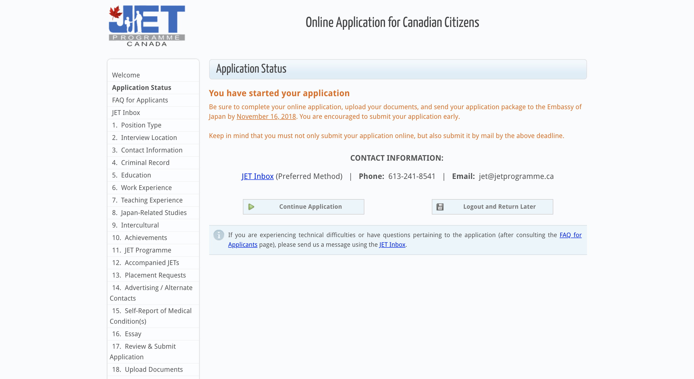
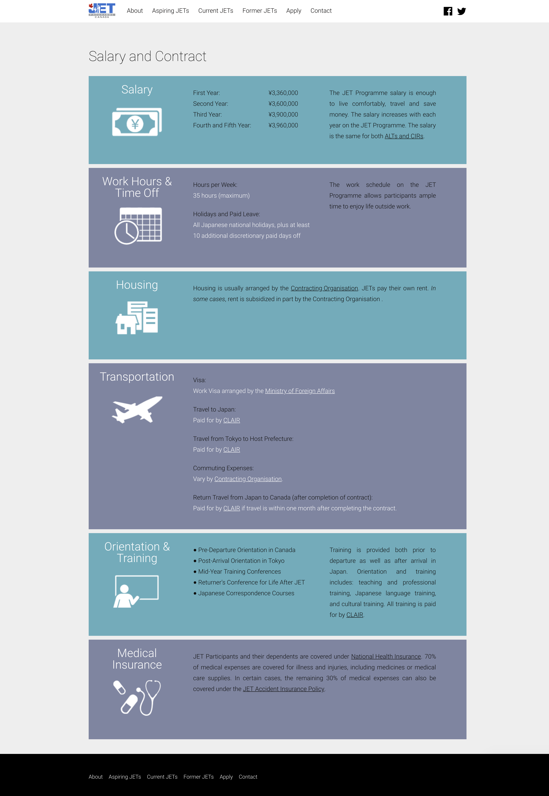
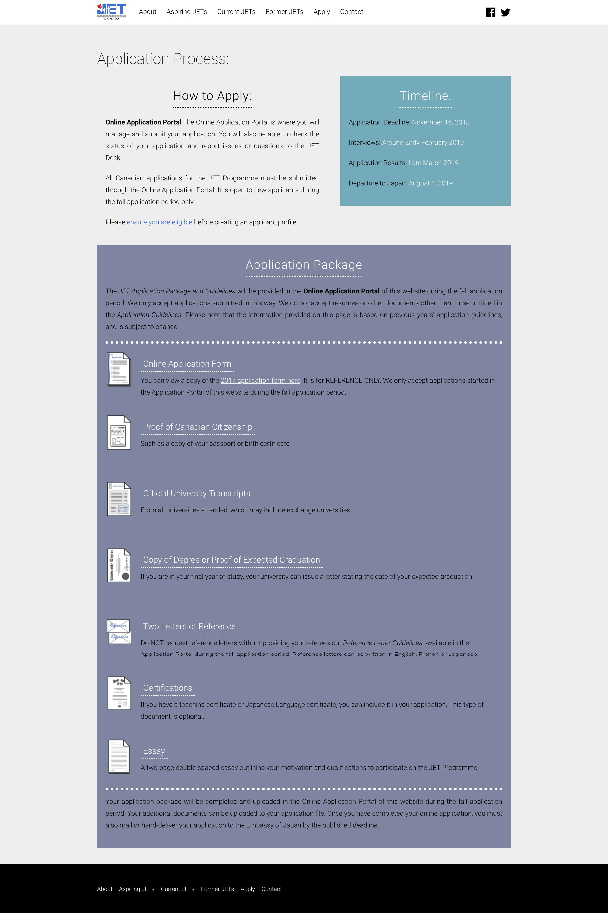
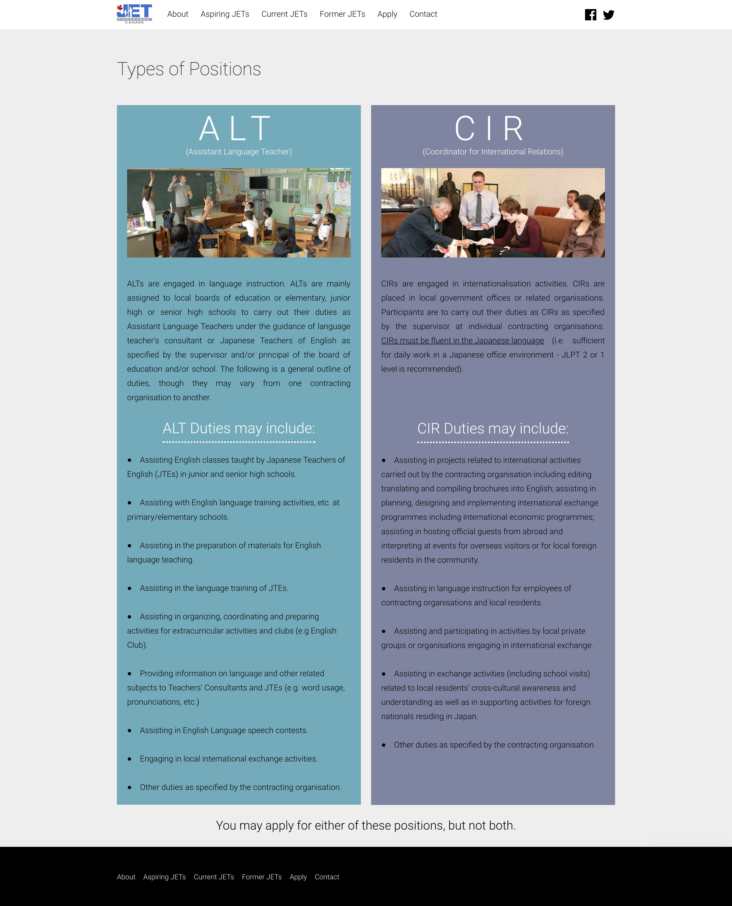
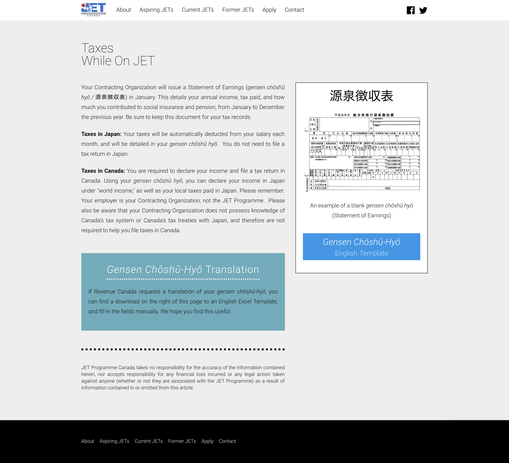
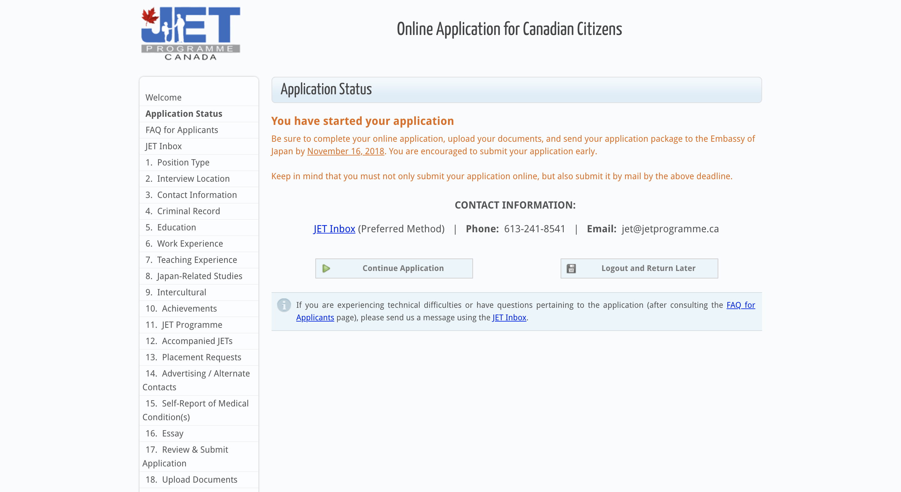
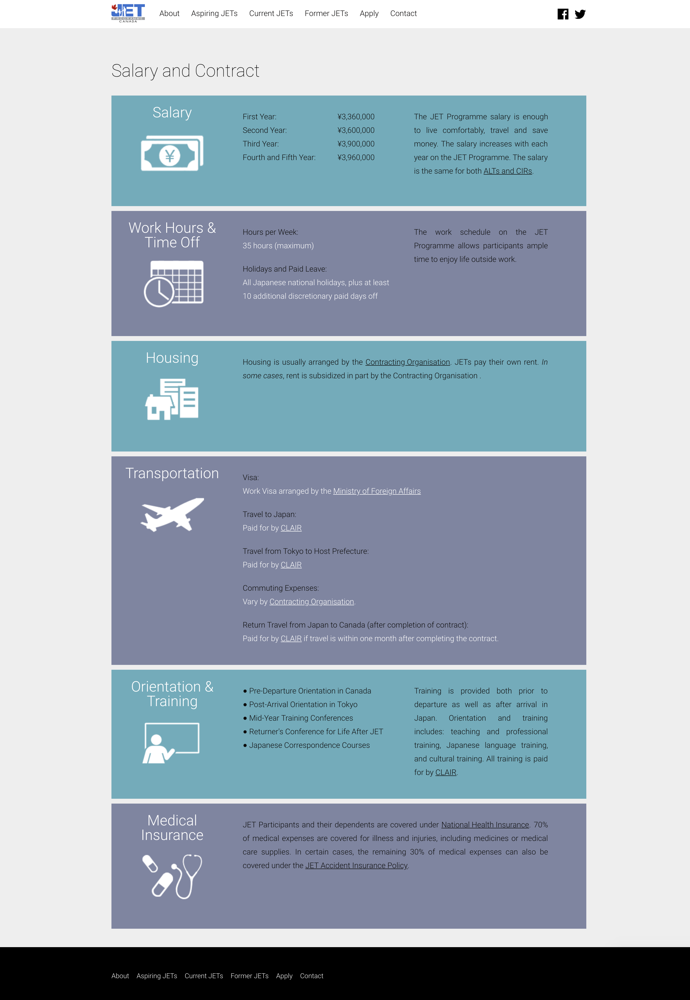
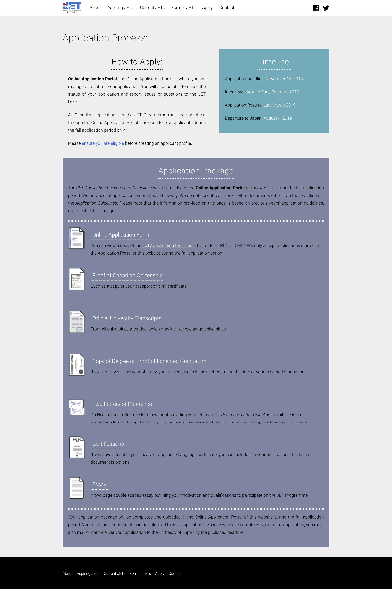
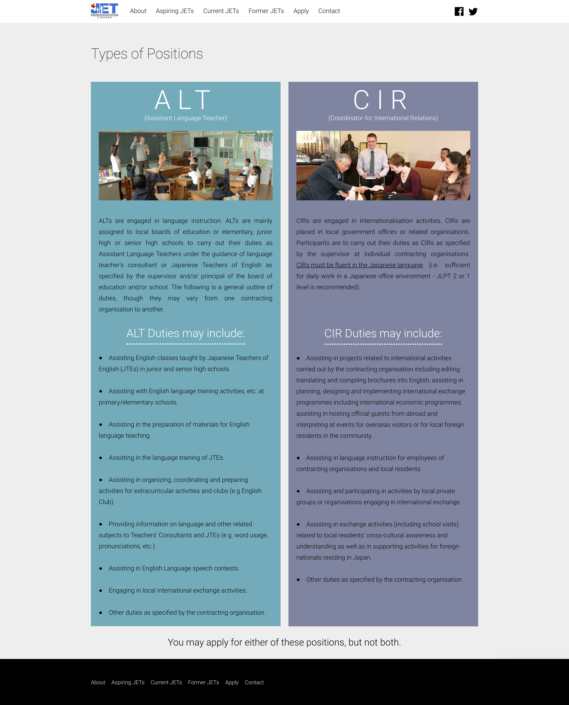
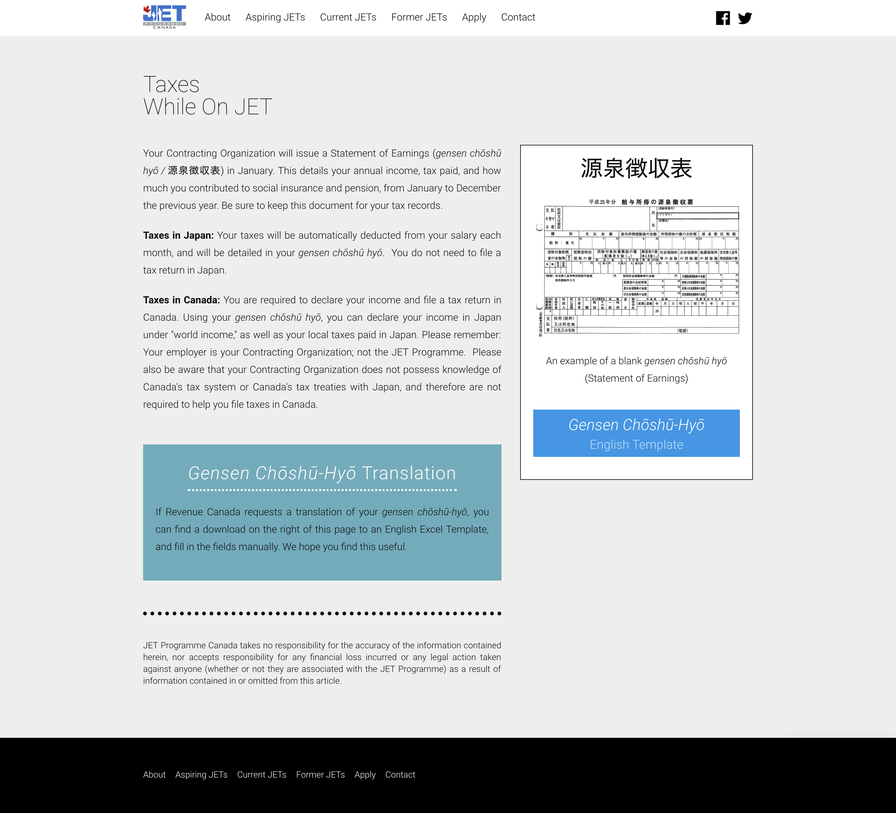

Embassy of Japan, 2015-2018
I was the project manager for JET Programme Canada, and the product manager for the programme's applicant tracking system.
The JET Programme is an international cultural and educational exchange programme run by the government of Japan. The programme sends about 200 Canadians each year to teach English in Japanese public schools. It is the oldest and most highly-regarded programme of its kind.
 www.jetprogramme.ca
www.jetprogramme.caProduct Management Approach
- Checked social media daily to see what people were saying about the programme
- Research: in-person meetings and questionnaires with stakeholders
- Researched and compared competitors such as South Korea's EPIK and TALK Programmes
- Met with our backend web developer to discuss technical changes and improvements
Applicant Tracking System
Our applicant tracking system is used by thousands of applicants across Canada, regional coordinators, and the application evaluation team. The application process is very intensive, and the evaluation process is equally thorough.
- Added a "flagged" tag to applications that needed additional follow-up
- Added an "application status" to improve communication with applicants in a low-maintenance but effective way
- Reduced clicks per action for the application evaluation team by reorganizing the admin portal
Website
- Rebuilt the programme's website using Wordpress
- Expanded information for applicants and participants based on user feedback
Rebranding
Recognizing the need to differentiate the Canadian branch of the programme from that of other countries, I rebranded the Canadian side of our programme as JET Programme Canada and designed a logo that was true to both our global and Canadian brands.
This increased improved our social media engagement and reduced confusion among programme applicants.
 








